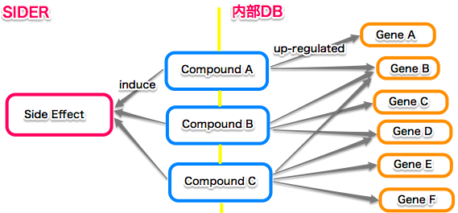

SPARQLthon28/SideEffect2Gene
提供：TogoWiki
目次 |
現状と今後の計画
- 副作用（臨床情報）から化合物経由で手持ちの遺伝子発現情報（ラットの実験による非臨床情報）への統合を行っています。
【超単純化したイメージ図】 
{kind=link}
- 叩き台的なアプリケーション（副作用→上昇遺伝子 with その時投与された化合物 = 副作用を引き起こした化合物）を作成しました。
- 今後の方針として，得られた遺伝子に共通する特徴，機能等を得られるようなアプリケーションを作成しようと思っています。
相談
- マイクロアレイの実験条件に対して遺伝子発現情報（発現上昇／下降），遺伝子を付与する方法
- 現状，実験条件に対してpredicateにup-regulationを使い，直接遺伝子名を書いてしまっているのですが，修正が必要と感じています。
- プローブと遺伝子名，発現上昇／下降を実験条件に付与するための既存の例（あるいは役立つ例）はあるのでしょうか？
- 川島さんよりGene Expression Atlasを紹介して頂く。調査開始。=> "調査"へ
- 遺伝子に関連する情報を外部のDBからSPARQL 経由で得る方法
調査
- Gene Expression Atlas の RDF のドキュメント
- 以下の様なSPARQLを Gene Expression AtlasのSPARQL Endpoint から叩いて，必要なPredicateを把握
PREFIX atlasterms: <http://rdf.ebi.ac.uk/terms/atlas/>
SELECT distinct ?analysis ?value ?v ?o
WHERE {
?analysis atlasterms:hasExpressionValue ?value .
?value ?v ?o.
}
LIMIT 100
PREFIX atlas: <http://rdf.ebi.ac.uk/resource/atlas/>
PREFIX atlasterms: <http://rdf.ebi.ac.uk/terms/atlas/>
SELECT distinct ?v ?o
WHERE {
atlas:A-AFFY-25:1390710_x_at ?v ?o.
}
LIMIT 100
- 一部の検索結果だけをピックアップしたところ，必要なスキーマは設計されている様子。
{kind=link}
- ただ，Gene Expression Atlasは，今後もっと数値を使ったスキーマに設計され直されるのではないか，ということ（バイ川島さん）
進捗と今後の方針
- 現在のところ，数値を直接SPARQLでは使わないので，特定の条件で区切ってしまうことに。（例：log2foldの値 > 1 ，p-value < 0.05 で発現上昇と規定）
- GeneExpressionAtlasに習って，実験条件のRDFに対して，hasExpressionValueをpredicateとして付与し，p-value, Up, Down等も記述してしまう。
- 厳密に考えると実験条件の中の個体差の扱いもあるので，（同条件での実験でも個体差を考慮するためにラットを3匹使用していたりする）これらを同一に扱うか（平均値を取る）別々に扱うか否かは要相談＆検討。